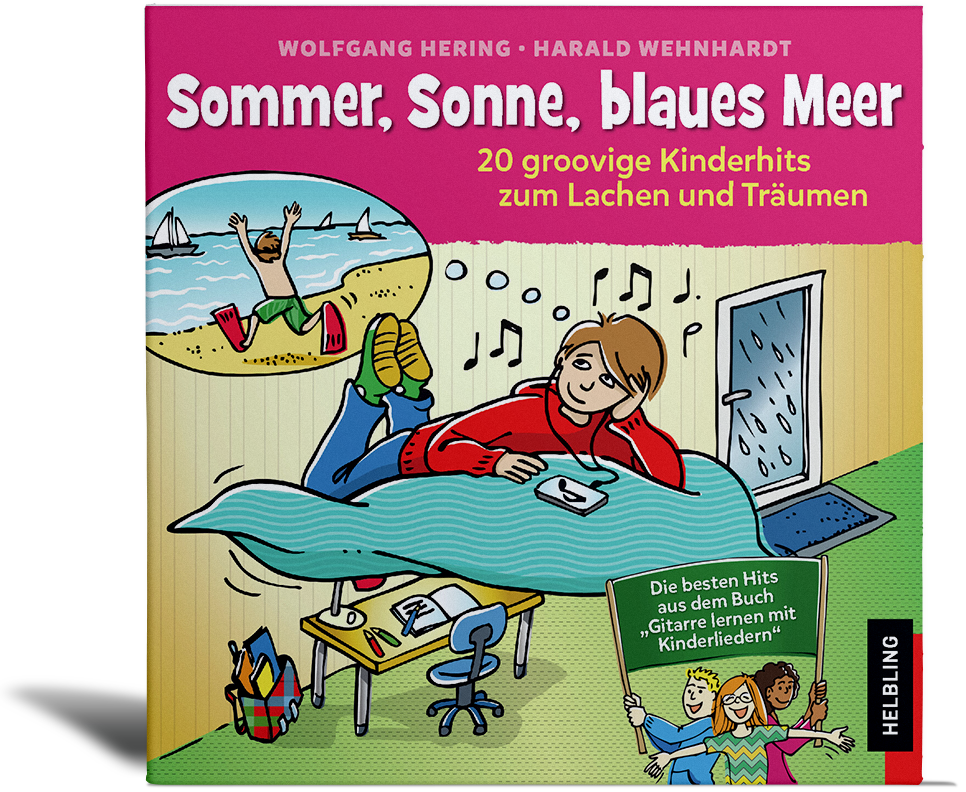

|

|
Gefallen Euch die Lieder?
20 groovige Kinderhits von Wolfgang Hering und Harald Wehnhart sind auch auf CD erhältlich.
Jetzt bestellen auf www.helblingmusik4kids.de!
Wer träumt nicht gerne von einem sonnigen Tag am Strand? Wenn Krabben hinter Krabben krabbeln und am Abend ein grooviges Live-Konzert der Flüstermännchen steigt? Bei dieser Liedersammlung ist gute Laune garantiert – auch bei Erwachsenen! Denn die akustisch eingespielten Aufnahmen greifen von Funk über Reggae und Tango in alle Stilregister. Das Booklet enthält neben allen Liedtexten Rätsel und Aufgaben für Kinder ab 6 Jahren.